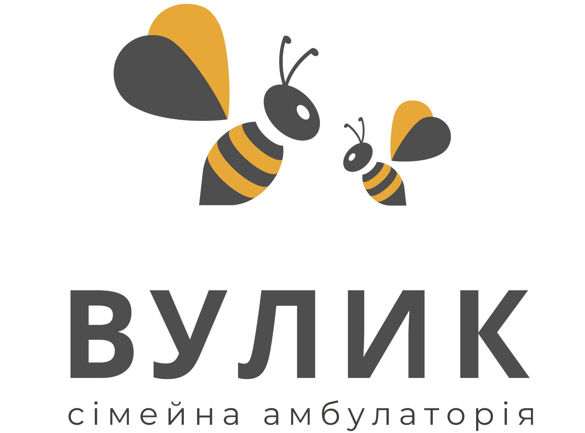

Розрахунок відбувається миттєво у вашому браузері. Ми нічого не зберігаємо й не надсилаємо.
Вік дитини зараз
—
Наступне щеплення
—

Вакцинація
Вкажіть дату народження дитини — і ми складемо персональний графік щеплень за оновленим Національним календарем МОЗ України (наказ № 396 від 05.03.2025, чинний з 1 січня 2026 р.): що вже час зробити, що наближається та що попереду.
Розрахунок відбувається миттєво у вашому браузері. Ми нічого не зберігаємо й не надсилаємо.
Важливо. Цей календар — інформаційний орієнтир за оновленим Національним календарем профілактичних щеплень МОЗ України (наказ № 396 від 05.03.2025, чинний з 1 січня 2026 р.). Первинні щеплення у 2–4–6–18 міс проводяться комбінованими (багатокомпонентними) вакцинами. Проти ВПЛ — одна доза для дівчат 12–13 років. Реальні дати можуть відрізнятися залежно від стану здоров'я, пропущених раніше щеплень і наявних вакцин. Якщо щеплення розпочаті пізніше або пропущені — лікар складе індивідуальний графік за Календарем щеплень із порушенням графіку. Остаточне рішення щодо кожного щеплення ухвалює лікар після огляду.
Оберіть зручний час — ми підберемо найближчий прийом